Animação em CSS - Um Guia Compreensível
Animação em CSS - Um Guia Compreensível
Animação
Ao falar em desenvolvimento de conteúdo digital para web page pensamos sempre em todas as possibilidades criativas que temos disponíveis para tornar o nosso conteúdo interessante, as ferramentas que nos podem ajudar a cativar a atenção de quem estiver a visionar a nossa página.
Cativar e chamar a atenção de quem está a visualizar um website é por si só uma tarefa elemental na criação de conteúdo digital, isto pode ser obtido através de linguagens de código complexas na construção de uma página ou com o uso de outras mais simples e acessíveis a qualquer pessoa que esteja a começar no mundo de conteúdo direcionado para User Xperience.
Neste sentido existem duas soluções para dar vida à nossa página ou website
JavaScript
Ao criar animações com JavaScript poderemos animar elementos controlando ao pormenor uma variedade de aspetos desde o tempo e a velocidade da animação, fazer com que ela pare ou inicie de novo tendo, portanto, um controlo mais avançado da animação a realizar em conformidade com a complexidade da sua estrutura.
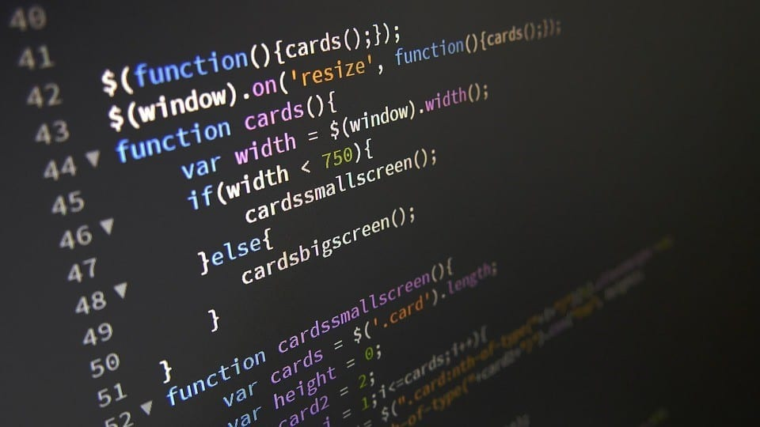
CSS
Ao trabalhar as animações de uma página em CSS temos uma abordagem simples e efetiva na aplicação de animações a elementos de uma página, aqui a estrutura da animação é mais acessível e foca-se no comportamento que podemos atribuir a um elemento alterando o seu estado entre um ponto A (estático/inalterado) e um ponto B (após alteração/modificação).
Neste espaço iremos focar a nossa atenção em CSS, irão ser apresentadas uma serie explicações auxiliadas com exemplos para cada uma das propriedades que podemos aplicar a um elemento para dar vida a nossa página, utilizando unicamente a folha de estilos de CSS.
CSS (Cascading Style Sheets)

Com o intuito de personalizar o conteúdo que iremos por ao dispor dos visitantes da nossa página, temos portanto, a nossa folha de estilos CSS na qual iremos modificar os elementos contidos dentro do html, poderemos mudar a sua cor, tamanho, forma, construindo em formato de cascata, daí o seu nome, os diferentes atributos que iremos aplicar ao nosso documento e assim personalizar o nosso conteúdo para maximizar a experiência de quem visita a nossa página.
Princípios Fundamentais de CSS
Para criar animações em CSS é preciso ter em conta três aspetos muito importantes que permitem uma vasta combinação de atributos a serem aplicados a um elemento e servem como base fundamental para o correto funcionamento de cada uma das animações que temos ao nosso dispor, estas propriedades são Transition, Keyframes e Transform .
Transition
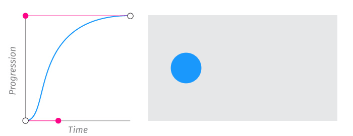
Podemos automatizar de forma simples o comportamento que um elemento irá ter utilizando a propriedade Transition. Aqui são variadas as alterações que podemos atribuir entre um ponto A e um ponto B a um elemento, para isto devemos especificar as seguintes propriedades:
Transition-Property
Por medio de esta propriedade identificamos o aspeto a mudar no elemento, este pode variar desde a cor de fundo, as margins, paddings, borders, entre muitos outros.
transition: (background, color, border,...)
Existem listas muito completas para consultar todos os atributos que podemos modificar, como esta: Aqui
Transition - Duration
Este aspeto é muito importante para o bom funcionamento da transição que pretendemos implementar, se não identificarmos um valor específico será atribuído “0” como o valor default, isto significa que ao termos zero como o tempo definido para a duração da transição, esta será automática, rude, na sua transição do seu estado A inalterado para B modificado.
transition-duration: 0.4s;
Transition – timing - function
Através de esta função podemos atenuar, suavizar a velocidade em que a transição é feita, isto é, se uma transição tiver uma duração de 4s podemos definir a velocidade que o elemento irá ter ao longo de estes 4s com o uso dos seguintes atributos: ease , ease-in, ease-out, ease-in-out.
transition-timing-function: ease;
transition-timing-function: ease-in;
transition-timing-function: ease-out;
transition-timing-function: ease-in-out;
Bezier Curves
Para um controlo mais avançado e personalizado as nossas necessidades sobre a velocidade da transição que o elemento irá sofrer existe o atributo cubic-bezier(), para isto dispomos de quatro pontos da transição P0, P1, P2, P3 e P4, aqui podemos atribuir um valor entre 0,0 e 1,0 a cada um de estes pontos e assim representar a intensidade da velocidade do elemento ao longo de sua transição entre A inalterado e B modificado.
transition-timing-function: cubic-bezier(0.25, 0.1, 0.25, 1);
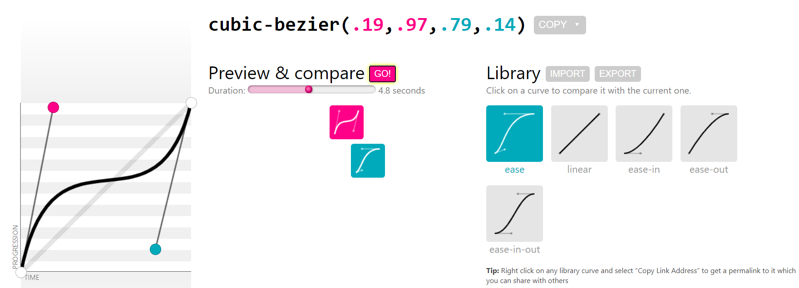Existem muitos sites online que ajudam a calcular e simplificar este processo, onde permitem testar diferentes valores para posteriormente copiar e aplicar na nossa folha de estiles após obter a animação desejada.
A seguir temos dois exemplos muito populares que ajudam a simular este efeito, após testar diferentes configurações de velocidade e estarmos satisfeitos com o comportamento do elemento exemplo, é sócopiar os valores para a nossa folha de CSS.
Css3beziercurve Cubic-bezierTransition - delay
Finalmente com esta atributo iremos especificar o tempo que levará a ter início a nossa transição após o evento que a desencadeia, que pode ser identificada em segundos (s) ou milissegundos (ms), isto é, se por exemplo quisermos mudar a cor de fundo de um elemento após a passagem do rato em hover, essa transição pode ser automática logo que o rato estiver sobre ele, ou pode levar algum tempo a acontecer de facto.
Podemos utilizar todos os conceitos anteriores por separado para a realização de uma transição de um elemento ou também é possível simplificar todas estas funções numa mesma linha de código da seguinte forma:
transition: (property) (duration) (transition-timing-function) (transition-delay);
See the Pen exemplo1 by Edgar Quintero (@Eopnala)on CodePen.
Keyframes
Para aplicar uma determinada animação a um elemento esta precisa de ter definido um ponto de início e um outro no qual ela termina, o primeiro representa o seu estado normal, natural, por sua vez o ponto de termino é quando finaliza o processo de mutação do elemento e este se encontra num estado diferente do original.
De igual forma mediante o uso dos Key Frames ( @keyframes ) podemos nomear o aspeto que o elemento terá num ponto específico da animação por meio de um valor em percentagem da evolução da mesma, os valores atribuídos podem ir do 0% onde teremos o elemento no ponto A estático e 100% onde teremos o nosso elemento no ponto B onde já estará finalizada a animação.
From
Através da função from identificamos qual será o ponto de partida para a animação, o que em termos de percentagem pode ser identificado como o ponto 0% da animação a ser realizada.
To
Aqui é especificado o estado final do elemento após o finalizar da animação que foi iniciada anteriormente, falando em percentagem este é considerado o ponto 100% da animação realizada.
@keyframes nome{
from {}
to{}
}
Percentagem
Também podemos utilizar vários pontos de evolução para o nosso elemento através de valores percentagem, como vimos no exemplo anterior, recomenda-se seguirem um padrão para permitir uma fluidez adequada a animação.
Example: 0% — 25% — 50% — 75% — 100%
@keyframes vaievem{
0% { transform: translateX(50px) }
50% { transform: translateX(100px) }
100% { transform: translateX(50px) }
}
A composição da propriedade ( @keyframes ) é muito importante para o seu correto funcionamento, ela deve ter um nome que iremos identificar na página de estilos CSS dentro da caixa a qual pretendemos aplicar a animação, isto tem como propósito ser o comando de chamada para atribuir ao nosso elemento a animação que iremos definir através dos keyframes, a seguir dentro dele devemos identificar o ponto from e o ponto to, ou então indicar com percentagem os diferentes tempos em que será realizada a animação.
Um forma simples de aplicar os atributos da propriedade animation é a través da mudança de posição e rotação, como no exemplo a seguir:
See the Pen CSS Keyframes exampleby tino Caer (@tcaer)on CodePen.
Animation Property
Como anteriormente dito, para obtermos este efeito em que o elemento passa do ponto A (cor verde) para o ponto B (cor vermelha) devemos introduzir os seguintes atributos dentro da caixa do elemento a ser animado, para identificar o comportamento que este irá a ter ao longo da animação
Animation – name
Aqui identificamos o nome que será atribuído após o @keyframes e será a ponte que permita o elemento buscar a animação que irá ser realizada nele.
animation-name: move;
Animation – duration
Neste atributo identificamos a duração, o tempo total que levará o nosso elemento a passar desde o seu ponto A inalterado até o B após a animação estar concluída.
animation-duration: 3s;
Animation – timing - function
Aqui indicamos a velocidade de aceleração com o atributo ease por exemplo a animação terá um início lento, ao meio acelera e abranda de novo no fim, também podemos estabelecer valores como os da “Brezer´s Curve para suavizar a transição entre o ponto A e o ponto B.
Os atributos que podemos aplicar são os seguintes:
animation-timing-function: ease;
animation-timing-function: ease-in; (Início lento, normal no fim)
animation-timing-function: ease-out; (Início normal, lento no fim)
animation-timing-function: ease-in-out; (Início e fim lentos)
animation-timing-function: linear; (Velocidade constante)
animation-timing-function: initial; (Valor default inicial)
animation-timing-function: inherit; (Herda a velocidade de um elemento acima dele)

Animation – delay
Determinamos com esta propriedade um compasso de espera entre o momento que a animação é ativada e o momento real da animação a ser aplicada.
animation-delay: 1s;

Animation – iteration – acount
Isto permite-nos estabelecer quantas vezes será reproduzida a animação, ou também podemos tornar a animação constante na sua repetição, para isto basta aplicar Infinite.
animation-iteration-acount: infinite; (Repete sem interrupção)
animation-iteration-acount: initial; (Define como default o valor inical indicado)
animation-iteration-acount: inherite;(Herda o valor a repetir de um elemento acima dele)

Animation – direction
Com esta propriedade iremos indicar qual será ordem em que se realiza a animação, realizar um ciclo e retroceder para o seu estado original por exemplo, ou ao finalizar voltar ao início e começar novamente.
animation-direction: normal; (Default, de início até ao fim)
animation-direction: alternate; (alterna entre normal e reverse)
animation-direction: reverse; (animação ininicia no fim e termina no início)
animation-direction: alternate-reverse; (aterna entre normal, reverse e alternate)

Animation – fill – mode
Ao utilizar esta propriedade se identifica quais os valores que irão ser aplicados no elemento antes e depois da animação se desenvolver.
animation-fill-mode: backwards; (antes de iniciar são aplicados os valores do ponto 0%)
animation-fill-mode: forwards; (O elemento mantem os alterações sofridas no ponto 100%)
animation-fill-mode: both; (Alterna entre both e fordwards)
animation-fill-mode: normal; (O elemento regrssa ao seu estado normal no fim)

Animation – play-state
Este atributo é muito útil porque permite pausar e continuar com uma animação que esteja a ser desenvolvida em estado Infinite por exemplo.
animation-play-state: playing;
animation-play-state: paused;

Ou então também é possível utilizarmos a versão abreviada de estes atributos onde podemos compilar toda esta informação numa única linha de código, por exemplo como observamos anteriormente na classe vaivem do quadro que mudava de cor, e acrescentar ainda outros atributos como o delay ou timing-function:
animation: (animation-name) (animation-duration) (animation-fill-mode) (animation-timing-function) (animation-iteration-count) (animation-direction) (animation-delay);
animation: vaievem easy-in-out 4s infinite alternate 1s;
É importante ressaltar aqui que a ordem em que são aplicadas as propriedades não tem de ser obrigatoriamente esta, com a exceção da função animation-duration que deverá estar sempre indicada antes da animation-delay, isto porque o primeiro valor apresentado será reconhecido como a duração da animação e o segundo como o tempo levará a animação a ser iniciada.
Finalmente ao utilizar estes atributos também é possível várias animações dentro da mesma caixa de elemento, isto é, se tivermos como no caso anterior duas animações, uma que muda a cor de fundo indicada no ( @keyframes ) de nome exemplo e outra em que a caixa avança e volta atrás no ( @keyframes ) de nome vaievem, estas podem estar juntas, porém devemos ter em atenção coincidir os atributos com a posição em que o nome foi indicado, por exemplo:
.caixa{
animation-name: example, vaievem;
animation-duration: 4s, 3s;
animation-fill-mode: forwards;
animation-delay: 1s;
animation-iteration-count: infinite;
animation-timing-function: ease;
animation-direction: alternate;
}
No caso de existir dois ou mais animações e não for identificado nenhuma função específica para a segunda ou terceira animação nos aspetos seguintes de duração, repetição e assim, o programa volta atrás e será tomado como valida a indicação que tiver sido dada em primeiro lugar, depois a segunda e sucessivamente.
Transform
Através da propriedade transform dispomos de uma grande variedade de atributos para modificar o estado e a posição em que um elemento será apresentado na página, seja em 2D ou em 3D, podemos determinar um comportamento específico para o nosso elemento após ser ativado por uma ação do utilizador, entre outros atributos.
Translate
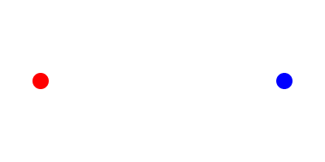
Com ajuda de este propriedade iremos movimentar o nosso elemento num plano 2D desde um ponto A até um ponto B. Para isto devemos ter em conta que o plano será divido em dois eixos, sendo Y na vertical de acima par abaixo e vice-versa e sendo X na horizontal de esquerda para a direita e vice-versa.
Para movimentar o lemento no eixo X (x-axis)
transform: translateX(200px); or transform: translateX(-200px)
Para movimentar o lemento no eixo Y (y-axis)
transform: translateX(200px); or transform: translateX(-200px)
É possível utilizar também a versão abreviada, sempre que se tenha atenção em introducir nesse caso os dois valores pretendidos, ao indicar um único valor este será reconhecido como sendo ao longo do eixo X
transform: translate(x-axis, y-axis)Example: transform: translate(200px, 200px);
See the Pen Translation by Edgar Quintero (@Eopnala)on CodePen.
Scale
Utilizando a propriedade scale iremos modificar o tamanho do elemento entre seu ponto de origem e o final, de novo utilizaremos para isto os eixos X e Y onde deveremos específicar um valor para o nosso elemento, sendo que qualquer valor acima de uma decima (1.0) irá incrementar o elemento e abaixo de este (0.5) irá diminuir o seu tamanho.
Podemos modificar a escala do elemento na horizontal pelo eixo X
transform: scaleX(3);
Igualmente podemos alterar a escala do elemento no eixo vertical Y:
transform: scaleY(0.5)
Os dois eixos podem ser combinados na mesma propriedade:
transform: scale(3 , 0.5); ou transform: scale(0.5);
See the Pen Scale by Edgar Quintero (@Eopnala)on CodePen.
Rotate

Com o uso de esta propriedade iremos aplicar um efeito de rotação ao nosso elemento. Para isto devemos implementar valores em graus através de três eixos X, Y, e Z. Esta animação pode ser orientada no sentido dos ponteiros do relógio se aplicarmos graus positivos, por sua vez se irá movimentar no sentido contrário se indicarmos valores negativos.
Podemos encontrar uma grande variedade de exemplos disponíveis para melhor compreender estas animações, a seguir por exemplo uma animação criada por um utilizador da página Codepen, aqui os nossos elementos estão a fazer uma rotação de 360 graus a cada 3 segundos.
See the Pen Rotate by Edgar Quintero (@Eopnala)on CodePen.
Rotação no eixo X
Sendo a rotação apresentada na horizontal esta não será muito percetível numa fase inicial, ao aumentar os graus poderemos ver sim uma alteração na altura do elemento.
transform: rotateX ( 45 deg );
Podemos ver como se irá comportar o nosso elemento em conformidade com os graus que formos aplicando ao dar Click Aqui!
Rotação no eixo Y
De novo pouco visível visto rodar na verticalidade do elemento, aqui será a largura de este que iremos ver ser alterada gradualmente com o aumentar ou diminuir dos graus introduzidos.
transform: rotateY ( 45deg );
Podemos ver como se irá comportar o nosso elemento em conformidade com os graus que formos aplicando ao dar Click Aqui!!
Rotação no eixo Z
Será com os graus indicados neste atributo que teremos uma clara perceção da rotação do nosso elemento, aqui será simples de perceber ao olhar a rotação que o nosso elemento irá ter, tendo o centro da caixa como eixo onde faz a sua rotação.
transform: rotateZ ( 45deg );
Podemos ver como se irá comportar o nosso elemento em conformidade com os graus que formos aplicando ao dar Click Aqui!
Utilizando valores positivos ao aplicar a propriedade rotate teremos um movimento de esquerda para a direita, como anteriormente dito ao utilizar valores negativos teremos um movimento rotativo no sentido oposto.
transform: rotateZ(45deg) – Rotação no sentido dos relogios
transform: rotateZ(-45deg) – Rotação no sentido contrário
De novo mais um exemplo cedido por um utilizador do Codepen, aqui temos três elementos e podemos observar o comportamento de cada um ao fazer uma breve rotação em cada eixo disponível, X, Y, e Z
See the Pen Eixos X Y Z by Edgar Quintero (@Eopnala)on CodePen.
Skew
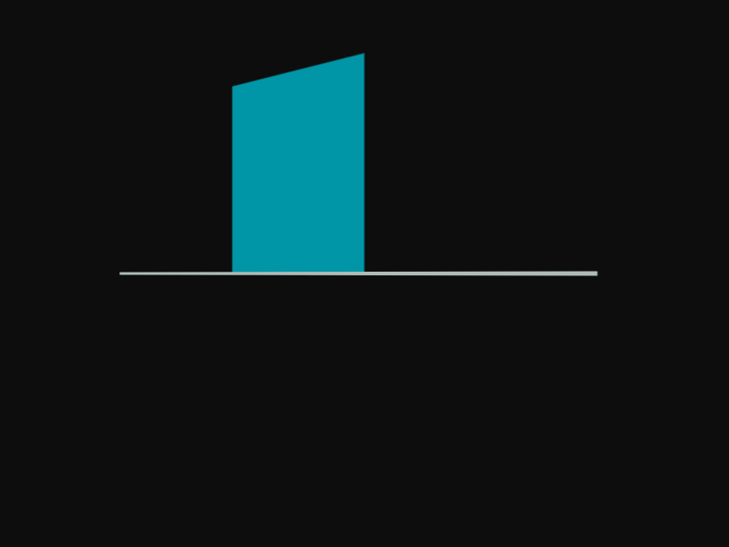
Skew é uma propriedade com a qual podemos modificar elementos em 2D que ao afastar ângulos do seu centro permite comprimir o seu volume, isto é, ao indicar um valor em graus para os eixos X e Y teremos um efeito de inclinação para o nosso elemento na vertical e horizontal.
Skew X ()
Com este atributo específico iremos inclinar o nosso elemento na horizontal, seja para a esquerda ao indicar valores positivos para X ou para a direita se forem negativos.
transform: skewX (20deg) ou simplificado skew (20deg);
See the Pen Skew X by Edgar Quintero (@Eopnala)on CodePen.
Skew Y ()
Este atributo possibilita, al igual que o anterior, inclinar o elemento numa direção específica, se for um valor positivo em graus para Y o elemento irá ser inclinado para cima e se for negativo irá para abaixo. Ao combinar estes dois valores de eixos teremos o efeito apropriado e desejado de ver o elemento ser comprimido numa direção simulando estar a ser deitado ou inclinado.
Para o eixo Y será: transform: skewY (80deg);
See the Pen Skew Y by Edgar Quintero (@Eopnala)on CodePen.
Com o intuito de simplificar a tarefa de quem estiver a criar em css, é possível conjugar estes atributos numa única linha de código, por exemplo:
transform: translateX (200px) rotateX (45deg) scaleY (1.5) skewX (45deg);
Podemos igualmente juntar estes dois atributos a ser aplicados a um único elemento e ter assim uma animação mais fluida, como por exemplo:
@keyframes skew {
0% { transform: skew(20deg, 20deg); }
100% { transform: skew(-20deg, -20deg); }
}
See the Pen skew() shorthand property by CSS-Tricks (@css-tricks)on CodePen.
CSS Generators
Para ajudar e facilitar a vida dos criadores de conteúdo com este tipo de tarefas que podem levar muito tempo a serem desenvolvidas, existem um grande número de geradores de código muito intuitivos e simples de utilizar, basta simular o comportamento que pretendemos no elemento, copiar e colar na nossa folha de estilos.
A seguir temos uma breve lista das páginas mais conhecidas e utilizadas onde podemos encontrar exemplos de código ou testar e construir o nosso proprio.
Web Code Tools
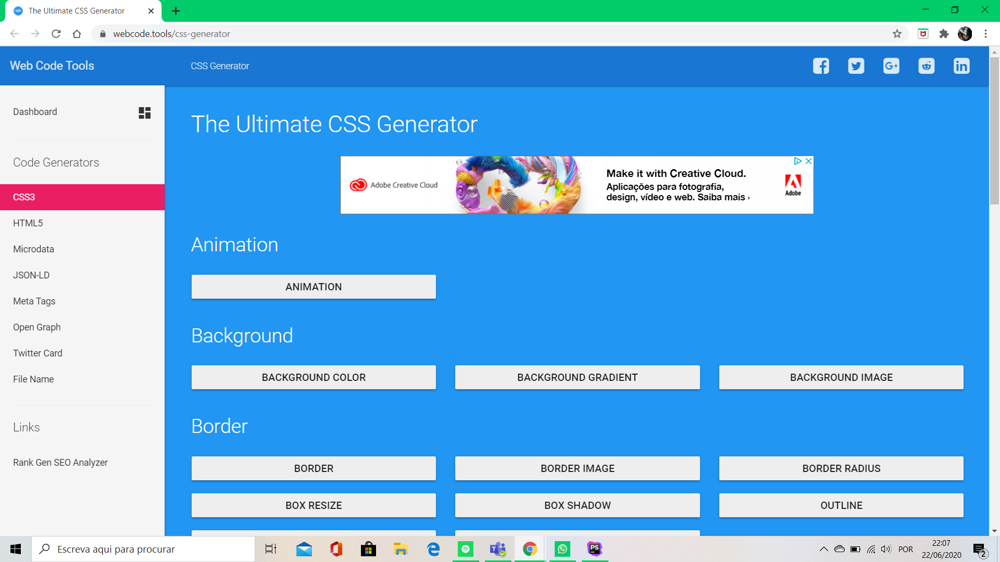
A página da Web Code Tools representa um espaço muito completo ao nível de conteúdo para o desenvolvimento de páginas web, nela é possível explorar muitos exemplos de animação realizados tanto em CSS como JavaScript. Na sua Home-Page encontramos uma barra lateral que contem varias livraria ao nosso dispor, desde CSS, html, JavaScript, entre outros, após fazer a nossa escolha teremos ao nosso dispor variados exemplos de animações para aplicar, estrutura html para construir a nossa página e muito mais.
Web Code ToolsCSS3 Generator
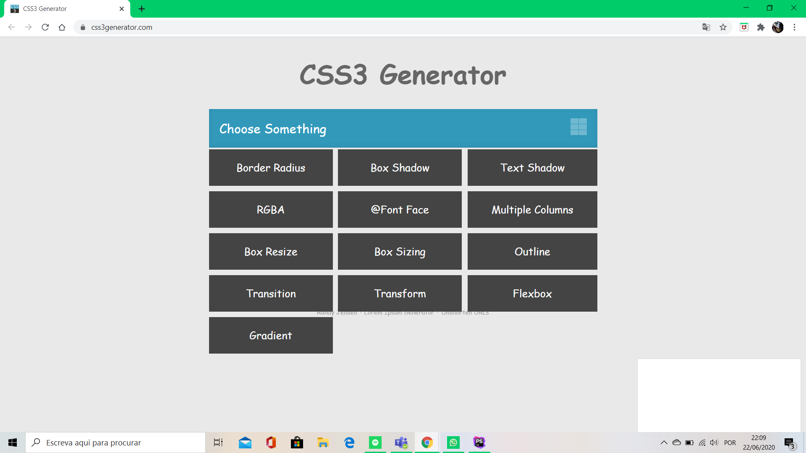
Esta página apresenta um generador, como está explicito no seu nome, que nos permite visualizar animações aplicadas a diferentes elementos, isto permite visualizar o comportamento que um elemento irá ter ao ser submetido a um determinado atributo, depois é copiar e colar o código para a nossa página de estilos.
Animista
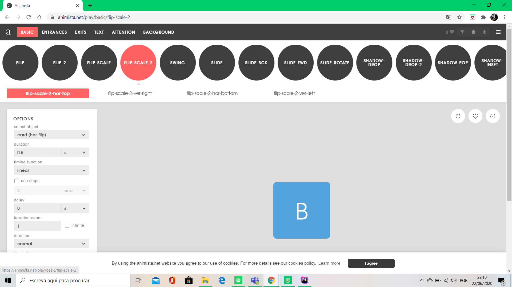
Esta página fornece uma livraria na horizontal na parte superior do web site onde podemos escolher variadas animações a serem aplicadas a um elemento, do lado esquerdo tem um elemento no quala através de inputs podemos alterar os diferentes atributos com que é manipulado o elemento e ver em tempo real como se comporta o elemento que pretendemos animar.
CSS Animate
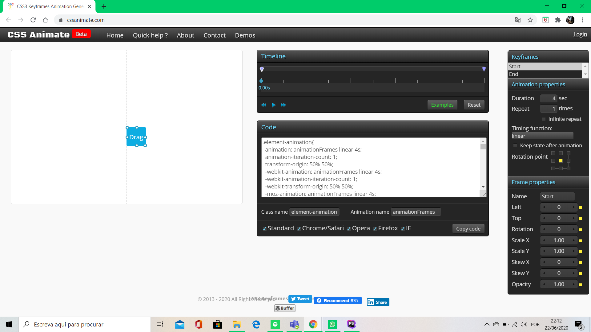
Esta página é muito simples na sua apresentação mas muito complexa na sua construção, com ela podemos modificar o aspecto de um elemento que se encontra no lado esquerdo, isto é feito atráves das propriedades disponíveis a nossa direita, onde também temos a possibilidade de personalizar os atributos a serem aplicados. Muito interessante e vale a pena ressaltar é a sua barra de tempo que nos permite escolher @keyframes específicos que podemos manipular e assim podemos testar quais os pontos mais adequados para animar que permitam obter o resultado desejado.
Angry Tools
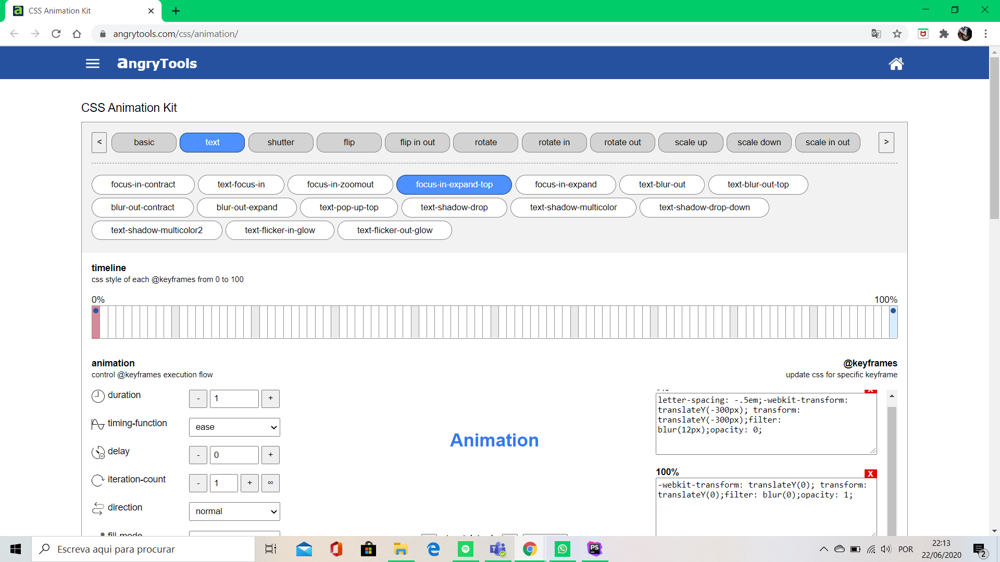
Igual que a página do exemplo anterior, o que mais chama a nossa atenção aqui é termos ao nosso dispor uma barra horizontal que representa os @keyframes da nossa animação, isto permite seleccionar o ponto exacto onde queremos que uma transformação do nosso elemento seja feita. Também existem uma grande variedade de exemplo ao dispor do visitante para experimentar no elemento que se encontra ao centro e fundo do nosso ecrã. A seguir a isto temos uma caixa com o código para copiar e colar o resultado desejado, tanto na página de html com na nossa página de estilos.
Code Pen
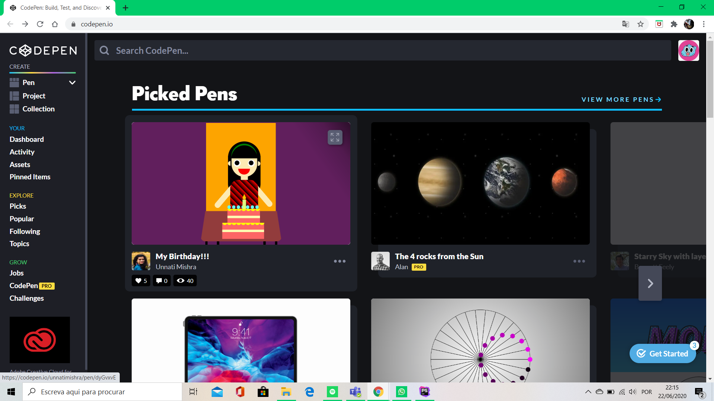
Esta página é uma das mais interesantes para visitar, nela temos ao nosso dispor exemplos de códiggo simples como o que abordamos aqui em CSS, até os mais complexos de JavaScript entre outros. Das suas características mais relevantes está a possibilidade de vermos código criado por outros utilizadores e diponível para ser visto e estudado por outros interessados na matéria, tem conteúdo muito versatil, onde podemos encontrar trabalhos desde os mais básicos possíveis como a mudança de cor num elemento, até a criação de perfeitas obras de arte, isto tudo num espaço feito pelos utilizadores, para os utilizadores.
Frameworks
Todas as propriedades que foram aqui mencionadas representam uma abordagem personalizada dos estilos que podemos criar para os nossos elementos, introduzindo atributos numa folha de estilos CSS, criando classes próprias para modificar o conteúdo do nosso documento HTML.
Com o objetivo de simplificar esta tarefa existe uma variedade de Frameworks já desenvolvidas e contendo código para serem asociadas as nossa página de estilos que etivermos a construir. Igualmente poderemos implementar propriedades aos nossos elementos directamente no documento HTML, através de classes já existentes utilizando abreviações permitindo mais produtividade e poupança de tempo.
A seguir temos uma breve lista das Frameworks mais conhecidas e utilizadas.